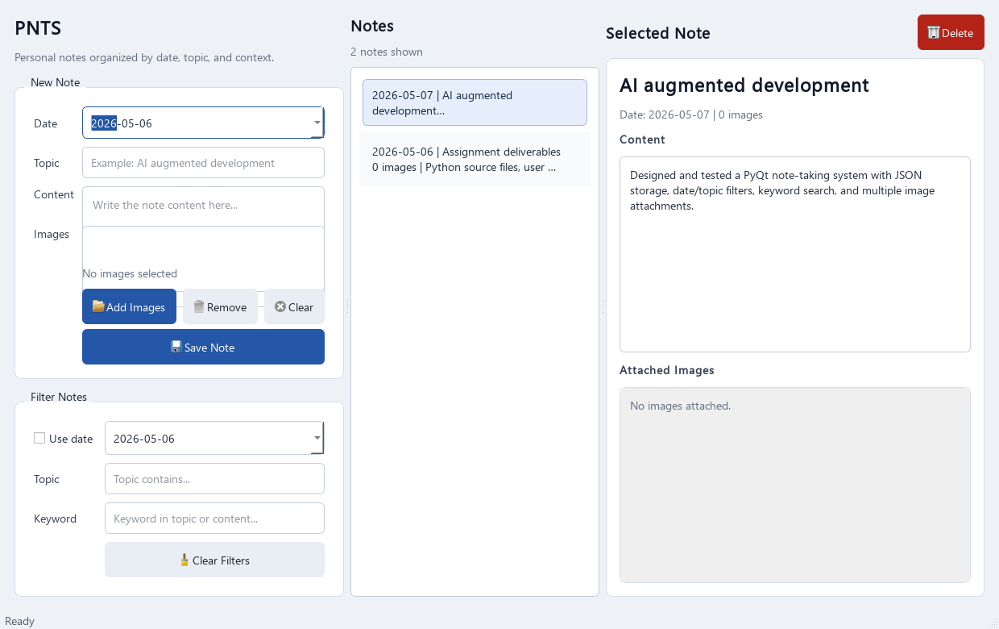

Create Notes
Date picker, topic input, multiline content, and multiple image attachments.
CSci 390: AI Augmented Development
A desktop Python and PyQt application for creating, organizing, filtering, and viewing notes with multiple image attachments.

The application implements the required note creation, viewing, filtering, and image attachment behavior.
Date picker, topic input, multiline content, and multiple image attachments.
Notes are saved locally in JSON and shown in a clear list sorted by date and creation time.
Filter the note list by date, topic text, and keyword search across topic and content.
Open a selected note to read content and view every attached image.
The GitHub repository includes source files, user documentation, an AI interaction log, and an experience summary.
pnts/docs/USER_DOCUMENTATION.mddocs/AI_INTERACTION_LOG.mddocs/EXPERIENCE_SUMMARY.mdtests/test_storage.pyVercel hosts this project page. The actual PNTS application is a desktop PyQt app and runs locally.
python -m pip install -r requirements.txt
python main.py